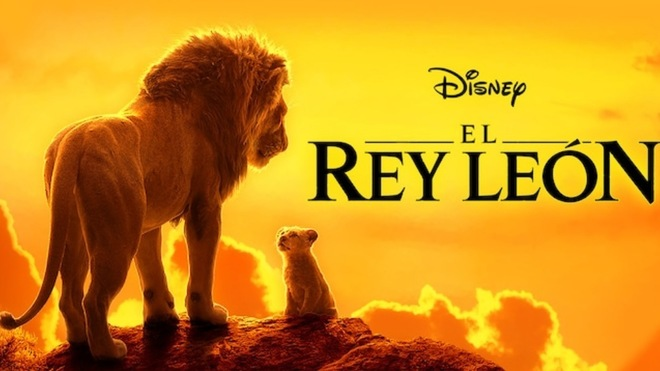

Es una película animada producida por Walt Disney Feature Animation y distribuida por Walt Disney Pictures. Es la trigésima segunda película en el canon de Walt Disney Animation y se realizó en un período conocido como el Renacimiento de Disney. La película se realizó bajo la dirección de Rob Minkoff y Roger Allers, el productor Don Hahn, los guiones de Irene Mecchi, Jonathan Roberts y Linda Woolverton, y con Hans Zimmer, Elton John y Tim Rice como encargados de la banda sonora. Además, cuenta con un amplio reparto coral en el que participaron Matthew Broderick, Jeremy Irons, James Earl Jones, Jonathan Taylor Thomas, Moira Kelly y Nathan Lane.

Guardia del León
Estados Unidos
La Guardia del León es una serie de televisión estadounidense de animación desarrollada por Ford Riley basada en la película de Disney de 1994, The Lion King. La serie fue transmitida por primera vez con una película de televisión titulada La Guardia del León: Un nuevo rugido en Disney Channel el 22 de noviembre de 2015 y comenzó a transmitirse como una serie de televisión el 15 de enero de 2016 en Disney Junior y Disney Channel. La Guardia del León es una secuela de El Rey León y tiene lugar durante el tiempo-brecha dentro de la película de 1998, El Rey León 2: El reino de Simba.